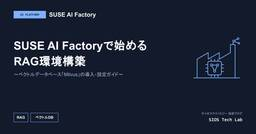
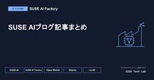

SIOS Tech Lab
https://tech-lab.sios.jp
サイオステクノロジーのエンジニアが クラウド、OSS、認証に関する様々な情報を提供します。
フィード

SUSE AI Factoryで始めるRAG環境構築 〜ベクトルデータベース「Milvus」の導入・設定ガイド〜
SIOS Tech Lab
はじめに 本記事では、以前紹介したOpen WebUIの機能の1つであるRAG(Retrieval-Augmented Generation)に焦点を当て、RAGに使用する情報を保存するベクトルデータベース「Milvus ...SUSE AI Factoryで始めるRAG環境構築 〜ベクトルデータベース「Milvus」の導入・設定ガイド〜 first appeared on SIOS Tech Lab.
1日前

コードを書くだけの時代は終わった。AIと挑み最後に辿り着いた「エンジニアの存在理由」
SIOS Tech Lab
自己紹介と参加理由 自己紹介 初めまして。公立はこだて未来大学 システム情報科学部 3年の奈良柚弥と申します。 大学では情報システムを専攻し、現在はAIを活用して「理想の相棒」となるAIロボットパートナーを開発するプロジ ...コードを書くだけの時代は終わった。AIと挑み最後に辿り着いた「エンジニアの存在理由」 first appeared on SIOS Tech Lab.
1日前
外部ツールと連携！FastMCPとDockerで作るMySQL用MCPサーバー 〜SUSE AI / Open WebUIで動かすAIエージェント構築の準備編〜
SIOS Tech Lab
はじめに こんにちは、サイオステクノロジーの小野です。SUSE AIで提供されているOpen WebUIは、LLMから外部のツールを操作するMCPサーバーと連携することが可能です。 本記事では、OpenWebUIとMCP ...外部ツールと連携！FastMCPとDockerで作るMySQL用MCPサーバー 〜SUSE AI / Open WebUIで動かすAIエージェント構築の準備編〜 first appeared on SIOS Tech Lab.
2日前

ユーザーの負荷を減らす：ヒックの法則とフィッツの法則をUI設計に落とし込む
SIOS Tech Lab
「機能はすべて揃っているのに、なんだか使いにくい」 「この画面、どこを押せばいいのか分からず、しばらく手が止まってしまう」 業務システムやWebアプリケーションを開発していると、こうしたフィードバックに直面することがあり ...ユーザーの負荷を減らす：ヒックの法則とフィッツの法則をUI設計に落とし込む first appeared on SIOS Tech Lab.
3日前

メンターの支援と合意形成で掴んだ、アプリ『スキマネ』完成までの10日間
SIOS Tech Lab
自己紹介と参加理由 自己紹介 公立はこだて未来大学システム情報科学部の 山口整吾です。 ソフトウェア工学やネットワーク技術を中心に、日々技術への理解を深めています。 大学での主要な活動であるプロジェクト学習では、「医療D ...メンターの支援と合意形成で掴んだ、アプリ『スキマネ』完成までの10日間 first appeared on SIOS Tech Lab.
3日前

SUSE AIブログ記事まとめ
SIOS Tech Lab
はじめに 本記事は、これまでに公開したSUSE AIおよびSUSE AI Factoryに関するブログ記事のまとめリンク集です。ぜひ参考にしてください。 SUSE AIとSUSE AI Factoryの概要 SUSE A ...SUSE AIブログ記事まとめ first appeared on SIOS Tech Lab.
4日前

認識のズレがエラーを生む。初めてのチーム開発で学んだ「共有」の重要性とプロからの学び
SIOS Tech Lab
自己紹介と、このインターンに参加した理由 自己紹介 公立はこだて未来大学システム情報学部システム情報学科３年の田村風輝です。 大学ではセキュリティやデータベースなど、情報系を主に学んでおり、プロジェクトでは動物とIT技術 ...認識のズレがエラーを生む。初めてのチーム開発で学んだ「共有」の重要性とプロからの学び first appeared on SIOS Tech Lab.
4日前

知っておくとちょっと便利！ネットワークの状態をチェックする ss コマンド
SIOS Tech Lab
今号では、ss コマンドの使い方やオプションについて説明します！ ss コマンドとは ss コマンドは、ネットワークの接続状況や、待ち受け (LISTEN) 状態のポートなどを確認できるコマンドです。 ネットワークのチェ ...知っておくとちょっと便利！ネットワークの状態をチェックする ss コマンド first appeared on SIOS Tech Lab.
4日前

【2026年11月】OSSサポートエンジニアが気になった！OSS最新ニュース
SIOS Tech Lab
こんにちは！ 今月も「OSSのサポートエンジニアが気になった！OSSの最新ニュース」をお届けします。 11/10、Linux Foundation Education は新しいトレーニングコース「組込みLinux開発 ( ...【2026年11月】OSSサポートエンジニアが気になった！OSS最新ニュース first appeared on SIOS Tech Lab.
4日前

画面でわかるOpen WebUIの機能紹介 〜日常のチャット活用からチーム連携・管理機能まで〜
SIOS Tech Lab
はじめに 本記事では以前のブログで紹介したOpen WebUIの豊富な機能について紹介します。機能の概要と実際に各機能を利用したデモ画像を用いて解説します。 Open WebUIの機能紹介 Open WebUIは基本的な ...画面でわかるOpen WebUIの機能紹介 〜日常のチャット活用からチーム連携・管理機能まで〜 first appeared on SIOS Tech Lab.
8日前